Famous Temples of Varanasi
Kashi Vishwanath Temple
The Kashi Vishwanath Temple is one of the holiest shrines dedicated to Lord Shiva. Located in the heart of Varanasi, this ancient temple has been a center of spirituality for centuries. Devotees believe that a visit to the temple brings salvation and liberation.
Address:Lahori Tola, Varanasi, Domari, Uttar Pradesh 221001
History: The original temple was built in the 11th century by King Harishchandra. The current structure was reconstructed by Rani Ahilyabai Holkar in 1780.
Significance: It is believed that Lord Shiva himself resides in the Kashi Vishwanath Linga, and a darshan of this linga is considered highly auspicious.

Kal Bhairav Mandir
The Kal Bhairav Mandir is a sacred temple dedicated to Lord Bhairav, a fierce manifestation of Lord Shiva. Devotees believe that Lord Bhairav protects Varanasi, and visiting this temple is considered a form of divine protection.
Address:Pandeypur Rd, Golghar, Naibasti, Varanasi, Uttar Pradesh 221002
History: The temple has ancient roots, and its current form is attributed to the Maratha monarch Maharaja Ranjit Singh.
Significance: Devotees offer prayers to Lord Bhairav seeking protection and the removal of obstacles.
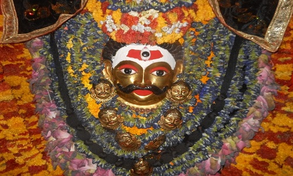Durga Kund Mandir
The Durga Kund Mandir, also known as Durga Temple, is dedicated to Goddess Durga. It is a vibrant temple with a red-colored facade and intricate carvings. Devotees visit during Navratri to seek the blessings of Goddess Durga.
Address: Durgakund Rd, Anandbagh, Bhelupur, Varanasi, Uttar Pradesh, India
History: The temple is believed to have been built in the 18th century by a Bengali queen.
Significance: Durga Kund Mandir is a symbol of feminine power, and devotees seek protection and courage from Goddess Durga.
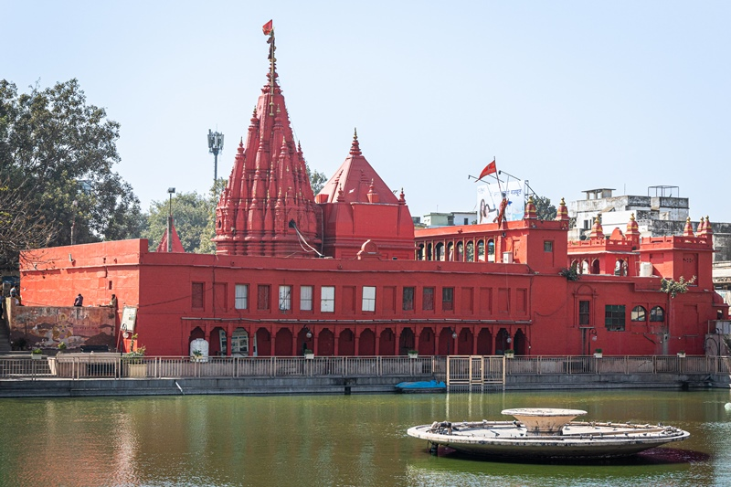Maa Annapurna Mandir
The Maa Annapurna Mandir is dedicated to Goddess Annapurna, the goddess of food and nourishment. Devotees believe that visiting this temple brings blessings for abundance and prosperity.
Address:8289+686, Panchaganga Ghat, Near Ram Mandir, Ghasi Tola, Varanasi, Domari, Uttar Pradesh 221001
History: The exact history of the temple is unclear, but it has been a center of devotion for those seeking sustenance.
Significance: Devotees offer prayers to Goddess Annapurna for food security and prosperity in their lives.
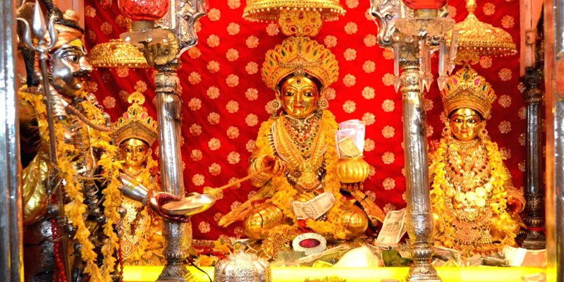Sankat Mochan Hanuman Mandir
The Sankat Mochan Hanuman Mandir is dedicated to Lord Hanuman. Devotees believe that visiting this temple removes obstacles and brings solace. The temple is known for its peaceful surroundings and Han
Address: Sankat Mochan Road, Varanasi, Uttar Pradesh, India
History: The temple was established by the renowned saint Goswami Tulsidas in the early 16th century.
Significance: Devotees visit this temple to seek relief from troubles and challenges. Tuesdays are considered especially auspicious.

Kanthwala Temple (Nepali Temple)
The Kanthwala Temple, also known as the Nepali Temple, is a unique architectural gem. It reflects the influence of Nepali culture and craftsmanship.
Address: Lalita Ghat, Varanasi, Uttar Pradesh, India
History: Built by the King of Nepal, the temple stands as a symbol of cultural exchange between India and Nepal.
Significance: Devotees appreciate the intricate woodwork and carvings in this beautiful temple.
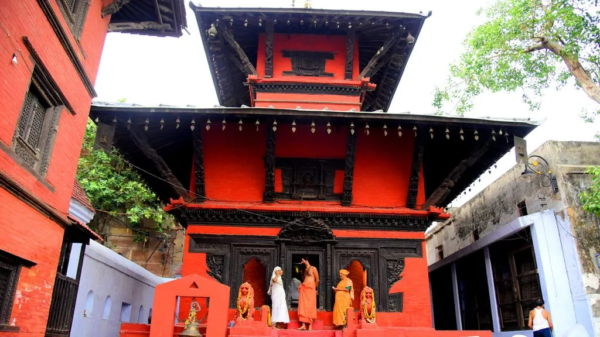Vishalakshi Mandir (Manikarnika Shrine)
The Vishalakshi Mandir is dedicated to Goddess Vishalakshi, a form of Goddess Parvati. It is situated near the Manikarnika Ghat.
Address:Kashi Lahori Tola Near Ganpati Guest House Meer Ghat, Varanasi, Uttar Pradesh 221001
History: The temple has ancient origins and is associated with the sacred Manikarnika Ghat.
Significance: Devotees seek the blessings of Goddess Vishalakshi for marital harmony and spiritual well-being.
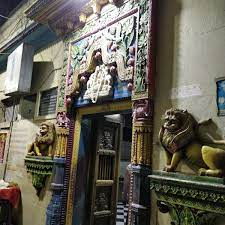Bharat Mata Mandir
The Bharat Mata Mandir is a unique temple dedicated to Mother India. Instead of traditional deities, it houses a relief map of India carved in marble.
Address: Mahatma Gandhi Kashi Vidyapith Campus, Varanasi, Uttar Pradesh, India
History: The temple was inaugurated by Mahatma Gandhi in 1936, and it symbolizes patriotism and unity.
Significance: The temple represents the idea of a unified India and is a symbol of national pride.
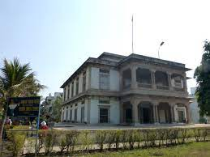Sankata Devi Mandir
The Sankata Devi Mandir is dedicated to Goddess Sankata, a form of Goddess Durga. Devotees visit to seek protection from various obstacles and challenges.
Address: Sankata Ghat, Varanasi, Uttar Pradesh, India
History: The temple has ancient roots and holds cultural and religious significance.
Significance: Devotees believe that Goddess Sankata provides relief from difficulties and ensures success.
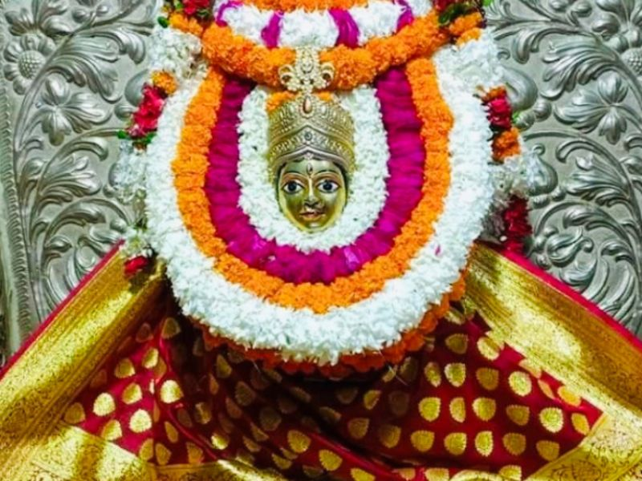Lalita Gauri Temple
The Lalita Gauri Temple is dedicated to Goddess Lalita Gauri, a form of Goddess Parvati. It is an important pilgrimage site for devotees seeking blessings for marital happiness.
Address:Banaras Ghat Rd, Ghats of Varanasi, Bangali Tola, Varanasi, Domari, Uttar Pradesh 221001
History: The temple has historical and cultural significance, attracting devotees from different parts of the country.
Significance: Devotees pray for the well-being of their families and seek marital bliss from Goddess Lalita Gauri.
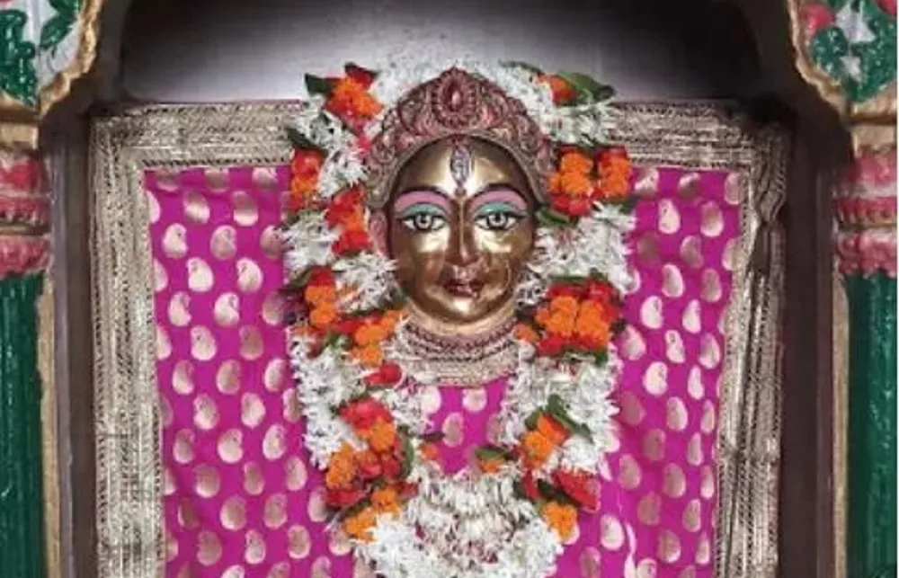Tulsi Manas Temple
The Tulsi Manas Temple is dedicated to Lord Rama. It is built at the spot where Tulsidas composed the epic Ramcharitmanas, recounting the life of Lord Rama.
Address:Sankat Mochan Rd, Durgakund Rd, near Jalan, Varanasi, Uttar Pradesh 221005
History: The temple was constructed in 1964 and is a modern architectural marvel.
Significance: Devotees visit this temple to pay homage to Lord Rama and to experience the spiritual ambiance.

Mrityunjay Mahadev Temple
The Mrityunjay Mahadev Temple is dedicated to Lord Shiva in his Mrityunjay (conqueror of death) form. Devotees believe that visiting this temple brings health and longevity.
Address: 82C7+VWW, Maha Mritunjay Rd, Bagh, Daranagar, Kotwali, Varanasi, Uttar Pradesh 221001
History: The temple has ancient roots, and its architecture reflects the rich cultural heritage of Varanasi.
Significance: Devotees believe that worshiping Lord Shiva in the form of Mrityunjay brings protection from untimely death and ailments.
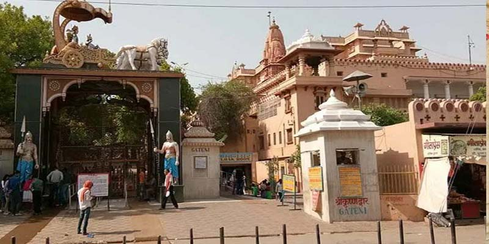Shri Tilbhandeshwar Mahadev Mandir
The Shri Tilbhandeshwar Mahadev Mandir is dedicated to Lord Shiva. It is known for its lingam that continuously gets submerged in water, symbolizing Lord Shiva's presence in the Ganges.
Address:Malti Bagh, Tilbhandeshwer, Bhelupur, Varanasi, Uttar Pradesh 221001
History: The temple has ancient origins, and its unique feature of the submerged lingam attracts devotees.
Significance: Devotees visit this temple to witness the unique phenomenon of the lingam submersion and to seek the blessings of Lord Shiva.
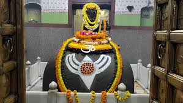New Vishwanath Temple, BHU
The New Vishwanath Temple, located within the Banaras Hindu University (BHU) campus, is a modern and architecturally stunning temple dedicated to Lord Shiva.
Address: Banaras Hindu University, Varanasi, Uttar Pradesh, India
History: The temple was constructed as a replica of the original Kashi Vishwanath Temple within the BHU campus.
Significance: Devotees and visitors appreciate the grandeur and spiritual atmosphere of this temple within the university campus.

Dundi Raj Ganesh Temple
The Dundi Raj Ganesh Temple is dedicated to Lord Ganesha. It is a popular temple visited by devotees seeking wisdom and the removal of obstacles.
Address: Main Gate-1 of Shri Kashi Vishwanath Temple, Varanasi
History: The temple has historical significance, and it attracts devotees during festivals dedicated to Lord Ganesha.
Significance: Devotees offer prayers to Lord Ganesha for success, wisdom, and the removal of hindrances.
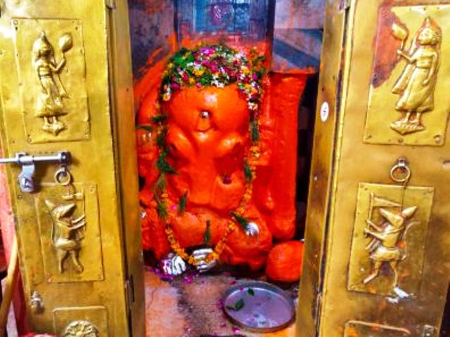ISKCON Temple of Varanasi
The ISKCON Temple in Varanasi is dedicated to Lord Krishna. It is a part of the International Society for Krishna Consciousness (ISKCON) and attracts devotees and visitors from around the world.
Address: B 27/80-A, Bhaktivedanta Swami Marg, Bhelupur, Varanasi, Uttar Pradesh, India
History: The temple is a part of the global ISKCON movement, promoting the teachings of Lord Krishna.
Significance: Devotees engage in devotional practices, attend spiritual discourses, and participate in festivals at the ISKCON Temple.
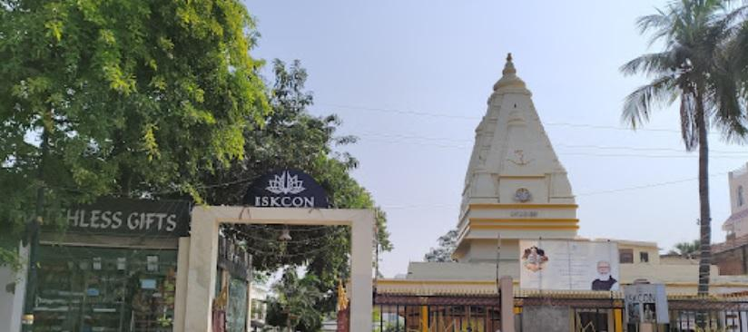Ratneshwar Mahadev Temple
The Ratneshwar Mahadev Temple is dedicated to Lord Shiva. It is known for its serene ambiance and is a place of spiritual solace.
Address: Near Harishchandra Ghat, Varanasi, Uttar Pradesh, India
History: The temple has ancient roots, and its peaceful surroundings make it a favored spot for meditation and contemplation.
Significance: Devotees visit this temple to experience tranquility and connect with the divine presence of Lord Shiva.

Vyasa Temple
The Vyasa Temple is dedicated to the sage Vyasa, who is credited with composing the epic Mahabharata. It is a place of reverence for those interested in ancient Indian scriptures.
Address: 729F+RH2, Ram nagar, Varanasi, Uttar Pradesh 221008
History: The temple is associated with the great sage Vyasa and serves as a reminder of the rich literary heritage of India.
Significance: Devotees and scholars visit this temple to pay homage to Sage Vyasa and seek blessings for knowledge and wisdom.
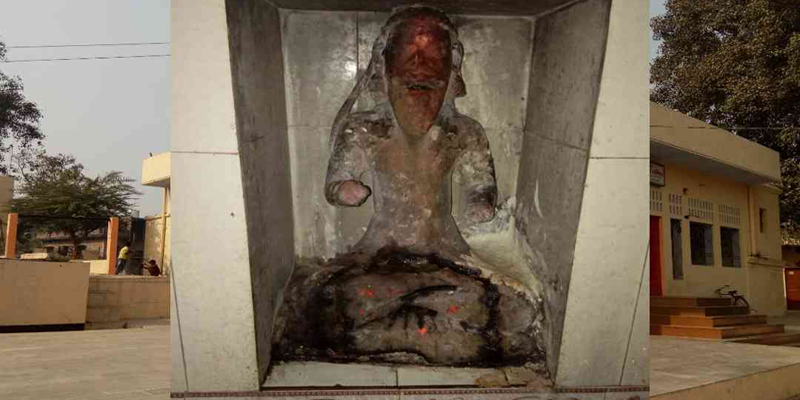Markandey Mahadev Temple
The Markandey Mahadev Temple is dedicated to Lord Shiva. It is named after the sage Markandeya, who is associated with a significant episode in Hindu mythology.
Address: kaithi, varanasi, Uttar Pradesh 221116
History: The temple has historical roots, and its name is linked to the legendary sage Markandeya.
Significance: Devotees visit this temple to seek the blessings of Lord Shiva and to understand the spiritual significance of the Markandeya story.
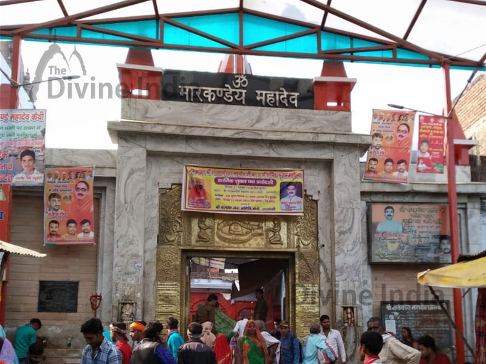Tridev Temple
The Tridev Temple is dedicated to the Hindu trinity of Brahma, Vishnu, and Shiva. It reflects the unity of the divine forces responsible for creation, preservation, and destruction.
Address:Tridev Mandir in Lanka,Varanasi
History: The temple stands as a symbol of the harmonious coexistence of the three major deities in Hinduism.
Significance: Devotees visit this temple to offer prayers to Brahma, Vishnu, and Shiva collectively, seeking blessings for overall well-being.
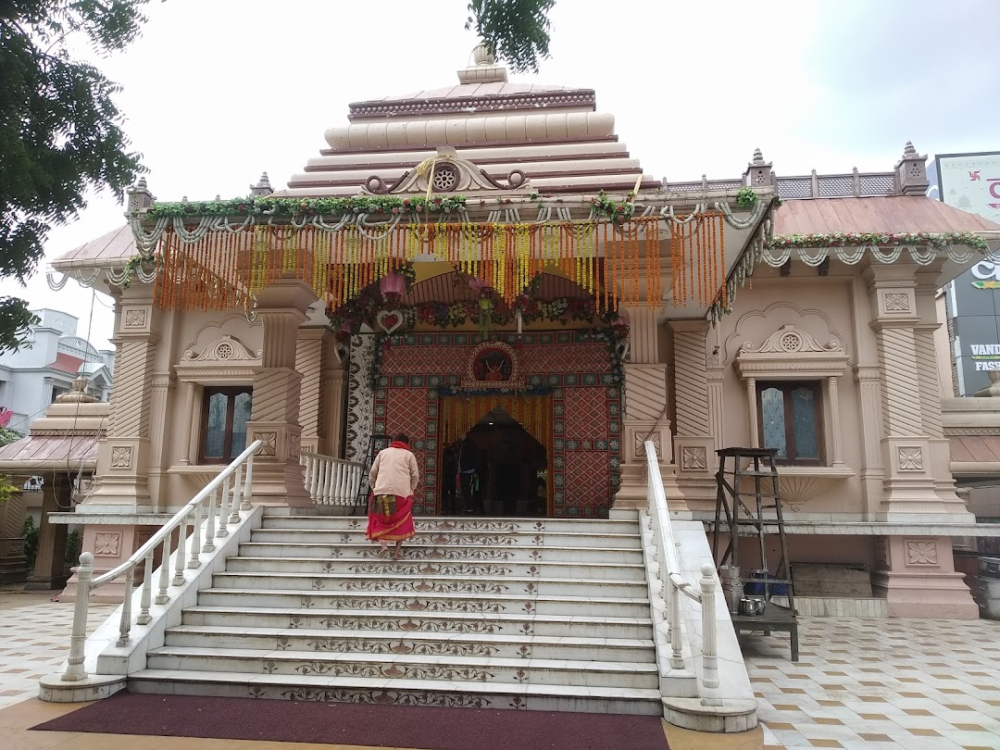